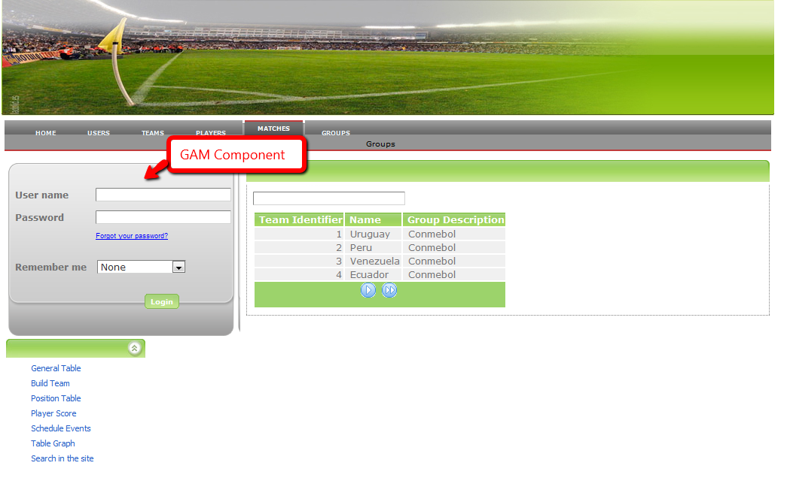
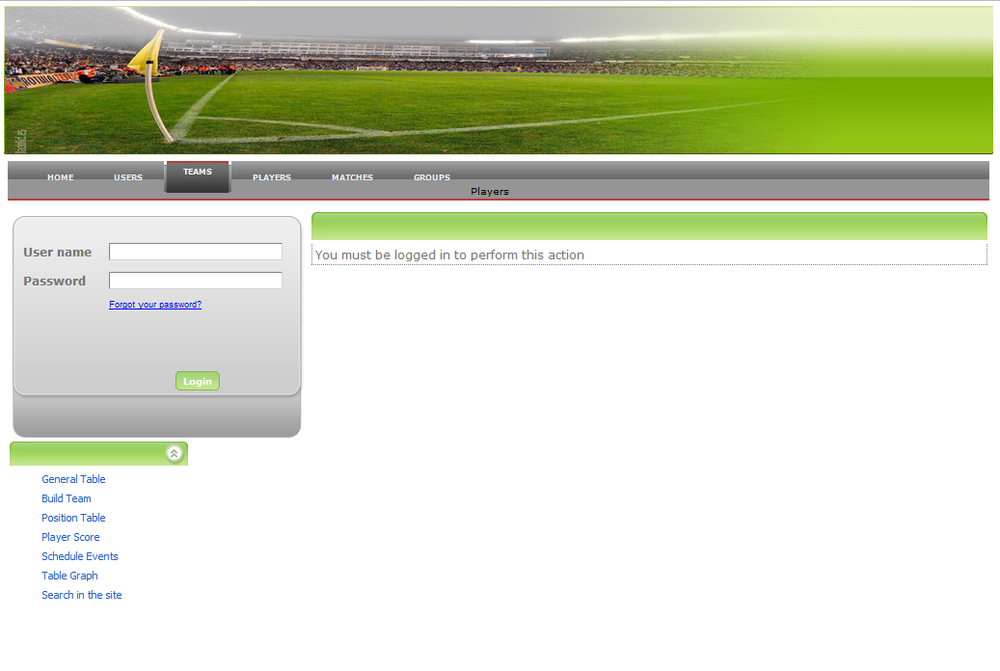
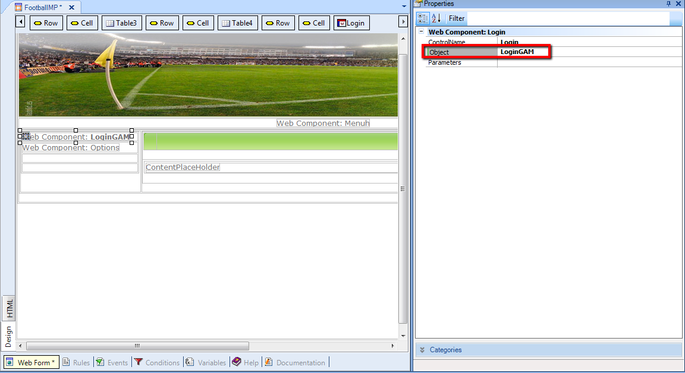
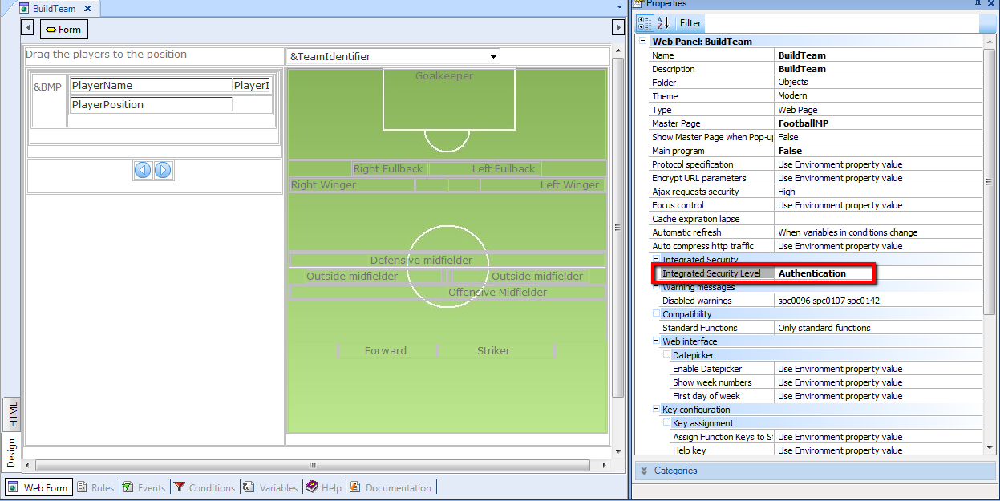

How to use GAM in my application: Public application with some private components. In this case, the application is mostly public, and has only some components which require authentication. The sample is based on Lab Application. In this sample “BuildTeam” object will be considered as private. So, the home page of the application will consist of a webpage of public access. This webpage will be included in a master page which includes a “login object” with the purpose of enabling the final user to enter his credentials and access to the private components of the application. The “look & feel ” of this sample webpage is as follows:  So what we actually want is that when the user tries to access “BuildTeam” from the menu, show to him a “PermisssionError” object which displays a message telling the user that he needs to be logged to perform the action desired, as shown in the figure.  Notes:
Only “BuildTeam” will have Integrated Security Level = "Authentication". Steps to follow:
Edit “LoginGAM” and make the changes needed. In this case, we need a “login” web component, and some changes in the layout of the form. In particular, we added the logout button and code to this component. This is a re-design of GAMExampleLoginObject using the GAM API. So the resulting object form is as follows: 4. Edit the masterpage in order to include the “login” object in it.   As a result of following this steps, when the user logs in (by using the login component), an implicit refresh is done so the authentication session (managed by GAM) is saved. When trying to access “BuildTeam” object the permission error won´t be shown any more. Download sample: FootBall
|
| Backlinks | |
| GAM Authentication Scenarios | GAM use Example: Private web application |
| HowTo: Configuring GXflow For Smart Devices |